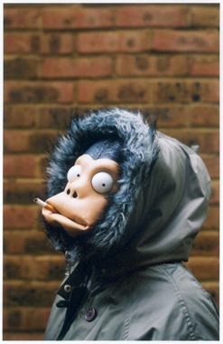

- 
- Credit
"SPEAK SOFTLY BUT CARRY A BIG CAN OF PAINT"
Who is Banksy?
When starting this project, we only knew Banksy from his more popular graffiti art. We knew that he didn't approve of capitalism, he's great at thinking of puns, and he likes to paint rats. A lot of rats.
Banksy is the most well-known graffiti artist in the world, but his actual identity is a mystery. His graffiti can be used to poke fun at the local police, but most of his work is used to shed light on more serious matters, like children soldiers. He paints with oils, acrylics, and spray paint; but also creates sculptures, whole installations, and has even made his own documentary, "Exit Though The Gift Shop".
With this site, we hope to make some of Banksy's works more accessible by creating a sort of database!